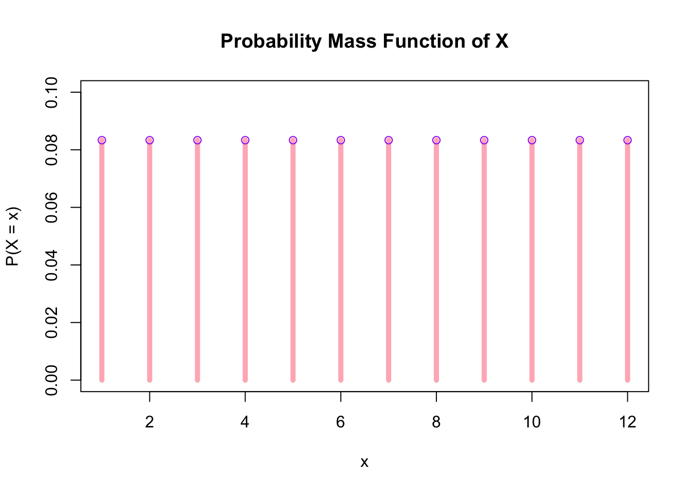
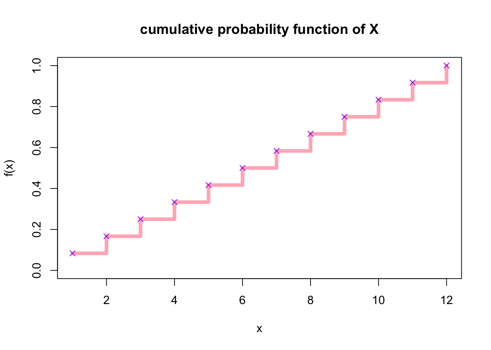
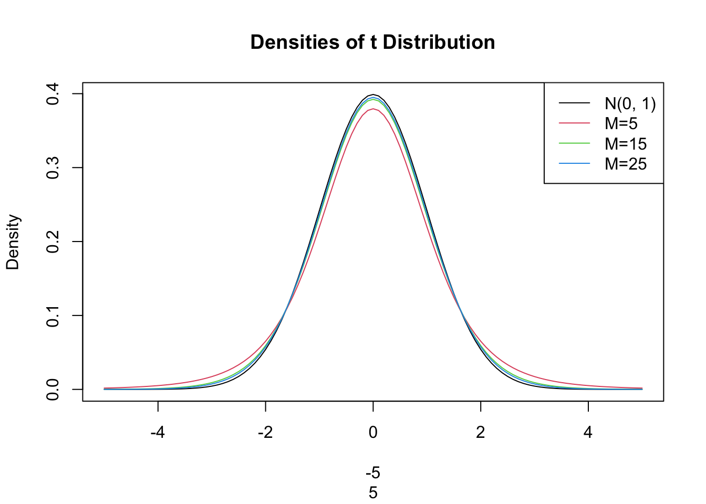

Code
f <- rep(1/12,12)
sum(f)[1] 1Assignment 1
Due Thursday October 8, 2026
Melody_Olowo
Answer all questions. Please complete your assignment using Quarto. Submit both your Quarto file and pdf output file.
Create a personal Quarto website hosted on GitHup pages. For reference, please see the slides for website on Nexus. Your website should include the following:
Paste your link here
Write your solutions using LaTeX. Show your work. You may use R to compute the answers.
Let \(X=\{1,2,3,4,5,6,7,8,9,10,11,12\) be a uniformly distributed variable with probability distribution function \(f_X(x)=1/12\).
- Check that \(f_X(x)\) is a true probability distribution.
- Compute the expected value of \(X\).
\({E}[X]=1*\frac{1}{12} + 2*\frac{1}{12}+3*\frac{1}{12}.....12*\frac{1}{12}=6.5\)
Let \(X\sim N(4,5)\). Find the probability of each event:
Let \(Z\sim N(0,1)\).
Let \(X=\{1,2,3,4,5,6,7,8,9,10,11,12\) be a uniformly distributed variable with probability distribution function \(f_X(x)=1/12\).
\[X=\{1,2,3,4,5,6,7,8,9,10,11,12\}\,f_X(x)=1/12\]

\[F_X(x)=P(X\leq x)= \begin{cases} 0, & x<1,\\ \frac{x}{12}, & 1\leq x<12,\\ 1, & x\geq 12. \end{cases}\]

```
The standard normal distribution function is given by \[f(x)=\frac{e^{-(x^2/2)}}{\sqrt{2\pi}\sigma}\]
pi and \(e\) is coded as exp.integrate() command in R. Infinity in R is written as Inf. To evaluate the integral, use integrate()$valuepnorm() command and compare your results to (f).Let \(X\) denote the prison sentence, in years, for people convicted of auto theft in a particular province in Canada. Suppose the PDF of \(X\) is given by: \[f(X)=\frac{1}{9}x^2,\text{ }0<x<3.\]
Let \(X\) follow a Student \(t\) distribution with \(M\) degrees of freedom. Then \[X=\frac{Z}{\sqrt{W/M}}\sim t_M,\] where \(Z\) is a standard normal variable and \(W\) is a chi-squared variable with \(M\) degrees of freedom.
curve(). Specify the range as [-5,5] using xlim. Name the ylab “Density”. The main title should be “Densities of t Distribution”.curve() and dt(). Specify the range as [-5,5] using xlim. Choose a different colour, i.e. col=2. To learn more about dt, type ?dt in your console.curve() and dt(). Specify the range as [-5,5] using xlim. Choose a different colour, i.e. col=3. To learn more about dt, type ?dt in your console.curve() and dt(). Specify the range as [-5,5] using xlim. Choose a different colour, i.e. col=4. To learn more about dt, type ?dt in your console.legend("topright", c("N(0, 1)", "M=2", "M=4", "M=25"), col = 1:4, lty = c(1, 1, 1, 1))# (a) Plot the standard normal and Student t distributions
# (i) Standard Normal Distribution
curve(dnorm(x), from = -5, to = 5,
xlab = c(-5,5), ylab = "Density",
main = "Densities of t Distribution",
col = "1")
# (ii) Student T distribution, df=5
curve(dt(x, df =5),
from = 5, to = -5,
xlab = c(-5,5), ylab = "Density",
col = "2",add = TRUE)
?dt
# (iii) Student T distribution df=15
curve(dt(x, df = 15),
from = 5, to = -5,
xlab = c(-5,5), ylab = "Density",
col = "3", add = TRUE)
?dt
#(iv) Student T distribution df=25
curve(dt(x, df =25),
from = 5, to = -5,
xlab = c(-5,5), ylab = "Density",
col = "4",add = TRUE)
?dt
#(v)
legend("topright",
c("N(0, 1)", "M=5", "M=15", "M=25"),
col = 1:4,
lty = c(1, 1, 1, 1))
As the degrees of freedom increase, the Student t distribution approaches the standard normal distribution. It also confirms the central limit theorm, that is as n becomes larger, the actual function becomes better appoximated by the normal distribution
#quarto render econ_3201_a1.qmd –to pdf
---
title: |
| ECON 3201
| Econometrics for Economics and Finance
subtitle: |
| Assignment 1
| Due Thursday October 8, 2026
author: Melody_Olowo
format:
pdf:
include-in-header:
text: |
\usepackage{fancyhdr}
\fancypagestyle{style1}{
\fancyhf{}
\fancyfoot[C]{\thepage}
\renewcommand{\headrulewidth}{0.4pt}
}
\fancypagestyle{style2}{
\fancyhf{}
\fancyhead[R]{Assignment 1}
\fancyhead[L]{ECON 3201}
\fancyfoot[C]{\thepage}
\renewcommand{\headrulewidth}{1pt}
}
\pagestyle{style2}
callout-appearance: minimal
---
# Instructions {.unnumbered}
Answer all questions. Please complete your assignment using Quarto. Submit both your Quarto file and pdf output file.
# Theory Questions
## Q1
Create a personal Quarto website hosted on GitHup pages. For reference, please see the slides for **website** on Nexus. Your website should include the following:
i. An “Index” or “Home” page. This page should include the following:
- Your name
- Your photo (optional)
- Your credentials
- An “About Me” section that provides a brief (one paragraph) introduction to yourself. \[10 Marks\]
ii. A blog page. This will be the landing site for future assignments \[5 Marks\]
iii. Create a blog post and upload the finished PDF for this assignment. \[3 Marks\]
iv. Navigation bar with “Home” and "Blog" buttons. The navigation bar is edited in the “\_quarto.yml” file. \[2 Marks\]
::: callout-tip
Paste your link here
:::
## Q2
Write your solutions using LaTeX. Show your work. You may use R to compute the answers.
Let $X=\{1,2,3,4,5,6,7,8,9,10,11,12$ be a uniformly distributed variable with probability distribution function $f_X(x)=1/12$.
> (a) Check that $f_X(x)$ is a true probability distribution.
::: callout-tip
$$\sum_{i=1}^{12}f_X(x)=1$$
```{r}
f <- rep(1/12,12)
sum(f)
```
$\frac{1}{12}+\frac{1}{12}+\frac{1}{12}.....+\frac{1}{12}=1$
:::
> (b) Compute the expected value of $X$.
::: callout-tip
$${E}[X]=\sum_{i=1}^{12}~x_i\*f_X(x)$$
```{r}
# Expected value of X
x <-1:12
f <- rep(1/12,12)
expected_value <- sum(x * f)
expected_value
```
:::
${E}[X]=1*\frac{1}{12} + 2*\frac{1}{12}+3*\frac{1}{12}.....12*\frac{1}{12}=6.5$
(c) Compute the variance of $X$.
::: callout-tip
$${Var}[X]=\sum_{i=1}^{12} (x_i-{E}[X])^2*f_i$$
```{r}
# Calculate variance
x <-1:12
f <-rep(1/12,12)
expected_value <-6.5
var <- sum((x-6.5)^2*f)
var
```
${Var}[X]=(1-6.5)^2 *\frac{1}{12} + (2-6.5)^2*\frac{1}{12}+.....+(12-6.5)^2*\frac{1}{12}=11.91667$
:::
## Q3
Let $X\sim N(4,5)$. Find the probability of each event:
(a) $Pr(X\leq6)$
::: callout-tip
$$X\sim N(4,5)\Pr(X \leq 6)$$
```{r}
# Let X ~ N(4, 5)
# Mean = 4, Var=5 Sd = sqrt(5)
# P(X <- 6)
pnorm(6, mean = 4, sd = sqrt(5))
```
:::
(b) $Pr(X>4)$
::: callout-tip
$$X\sim N(4,5)\Pr(X > 4)$$
```{r}
# Let X ~ N(4, 5)
# Mean = 4, Var=5 Sd = sqrt(5)
# P(X <- 4)
pnorm(4, mean = 4, sd = sqrt(5))
```
:::
(c) $Pr(-1\leq X< 1)$
::: callout-tip
$$X\sim N(4,5)\Pr(-1\leq X< 1$$
```{r}
# Let X ~ N(4, 5)
# Mean = 4, Var=5 Sd = sqrt(5)
# P(X <- -1,1)
pnorm(1, mean = 4, sd = sqrt(5)) -
pnorm(-1, mean = 4, sd = sqrt(5))
```
:::
## Q4
Let $Z\sim N(0,1)$.
(a) Compute $Pr(Z\leq 0.83)$
::: callout-tip
$$Z\sim N(0,1)\Pr(Z\leq 0.83)$$
```{r}
# Let Z ~ N(0, 1)
# Mean = 0, Var=1 Sd = sqrt(1)
# P(Z <- 0.83))
pnorm(0.83, mean=4, sd=sqrt(5))
```
:::
(b) Compute $Pr(-0.83 \leq Z\leq 0.83)$
::: callout-tip
$$Z\sim N(0,1)\Pr(-0.83\leq Z< 0.83)$$
```{r}
# Let Z ~ N(0,1)
# Mean = 0, Var=1 Sd = sqrt(1)
# Pz <- --0.83,0.83)
pnorm(0.83, mean=0, sd= sqrt(1)) -
pnorm(-0.83, mean=0, sd = sqrt(1))
```
:::
# R Excercises
## Q5
Let $X=\{1,2,3,4,5,6,7,8,9,10,11,12$ be a uniformly distributed variable with probability distribution function $f_X(x)=1/12$.
(a) Plot the probability distribution function $f_X(x)$ in R.
::: callout-tip
$$X=\{1,2,3,4,5,6,7,8,9,10,11,12\}\,f_X(x)=1/12$$
```{r}
# Define the sample space and probabilities
x <- 1:12
f <- rep(1/12, 12)
# Plot the discrete probability distribution
plot(x, f,
type = "h",
lwd = 5,
col = "lightpink",
main = "Probability Mass Function of X",
xlab = "x",
ylab = "P(X = x)",
ylim = c(0, 0.1))
points(x, f, col = "purple")
```
:::
(b) Plot the cumulative probability distribution function $f_X(x) in R$.
::: callout-tip
$$F_X(x)=P(X\leq x)=
\begin{cases}
0, & x<1,\\
\frac{x}{12}, & 1\leq x<12,\\
1, & x\geq 12.
\end{cases}$$
```{r}
# Define the cumulative probabilities
x <- 1:12
cdf <- cumsum(rep(1/12, 12))
# Plot the CDF
plot(x, cdf,
type = "s",
lwd = 5,
col = "lightpink",
main = "cumulative probability function of X",
xlab = "x",
ylab = "f(x)",
ylim = c(0, 1))
points(x, cdf, col = "purple", pch = 4)
```
\`\`\`
:::
(c) Compute the expected value of $X$ in R.
::: callout-tip
```{r}
# Compute expected value: E[X] = sum(x * P(X=x))
x <- 1:12
pmf <- rep(1/12, 12)
expected_value <- sum(x * pmf)
expected_value
```
:::
(d) Compute the variance of $X$ in R.
::: callout-tip
```{r}
# Compute variance: Var(X) = E[X^2] - (E[X])^2
x <- 1:12
pmf <- rep(1/12, 12)
expected_value <- sum(x * pmf)
variance <- sum((x^2) * pmf) - (expected_value)^2
variance
```
:::
## Q6
The standard normal distribution function is given by $$f(x)=\frac{e^{-(x^2/2)}}{\sqrt{2\pi}\sigma}$$
term
:
(a) Define this function in R. (Note: $\pi$ is coded as `pi` and $e$ is coded as `exp`.
::: callout-tip
```{r}
#Define the standard Normal Distribution
f <- function(x)
exp(-(x^2)/2) / sqrt(2*pi*1)
print(f)
```
:::
(b) Integrate this function over the limit \[$-\infty,\infty$\] using the `integrate()` command in R. Infinity in R is written as `Inf`. To evaluate the integral, use `integrate()$value`
::: callout-tip
```{r}
integral<-integrate(f,-Inf,Inf)$value
integral
```
:::
(c) Compute the expected value of the standard normal distribution in R and confirm it is equal to 0.
::: callout-tip
```{r}
# Expected value of a f
# Integrate from negative infinity to positive infinity
expected_value_normal<- integrate(function(x) x * f(x), -Inf, Inf)$value
expected_value_normal
```
:::
(d) Compute the variance of the standard normal distribution in R and confirm it is equal to 1.
::: callout-tip
```{r}
#Variance of f
# Integrate from negative infinity to positive infinity
variance<- integrate(function(x) x^2 * f(x), -Inf, Inf)$value
variance
```
:::
(e) Compute $Pr(Z\leq 0.83)$
::: callout-tip
```{r}
integrate(f, -Inf, 0.83)$value
```
:::
(f) Compute $Pr(-0.83 \leq Z\leq 0.83)$
::: callout-tip
```{r}
integrate(f, -0.83, 0.83)$value
```
:::
(g) Compute $Pr(-0.83 \leq Z\leq 0.83)$ using the `pnorm()` command and compare your results to (f).
::: callout-tip
```{r}
pnorm(0.83)- pnorm(-0.83)
```
:::
## Q7
Let $X$ denote the prison sentence, in years, for people convicted of auto theft in a particular province in Canada. Suppose the PDF of $X$ is given by: $$f(X)=\frac{1}{9}x^2,\text{ }0<x<3.$$
(a) Define $f(x)$ in R.
::: callout-tip
```{r}
#Define the PDF
#Define the standard Normal Distribution
f <- (f (x))
f <- function(x)
x^2/9
print(f)
```
:::
(b) Integrate $f(x)$ over the interval \[0,3\].
::: callout-tip
```{r}
integral<-integrate(f,0,3)$value
integral
```
:::
(c) Compute the expected prison sentence.
::: callout-tip
```{r}
# Expected value of a f
# Integrate from 0 to 3
expected_value_normal<- integrate(function(x) x* x^2/9, 0, 3)$value
expected_value_normal
```
:::
## Q8
Let $X$ follow a Student $t$ distribution with $M$ degrees of freedom. Then $$X=\frac{Z}{\sqrt{W/M}}\sim t_M,$$ where $Z$ is a standard normal variable and $W$ is a chi-squared variable with $M$ degrees of freedom.
(a) On the same figure plot the following:
(i) Plot the standard normal probability distribution using `curve()`. Specify the range as \[-5,5\] using `xlim`. Name the `ylab` "Density". The main title should be "Densities of t Distribution".
(ii) Plot the Student t distribution with 5 degrees of freedom using `curve()` and `dt()`. Specify the range as \[-5,5\] using `xlim`. Choose a different colour, i.e. `col=2`. To learn more about `dt`, type `?dt` in your console.
(iii) Plot the Student t distribution with 15 degrees of freedom using `curve()` and `dt()`. Specify the range as \[-5,5\] using `xlim`. Choose a different colour, i.e. `col=3`. To learn more about `dt`, type `?dt` in your console.
(iv) Plot the Student t distribution with 25 degrees of freedom using `curve()` and `dt()`. Specify the range as \[-5,5\] using `xlim`. Choose a different colour, i.e. `col=4`. To learn more about `dt`, type `?dt` in your console.
(v) Include the following legend in you plot:\
`legend("topright",` `c("N(0, 1)", "M=2", "M=4", "M=25"),` `col = 1:4,` `lty = c(1, 1, 1, 1))`\
::: callout-tip
```{r}
# (a) Plot the standard normal and Student t distributions
# (i) Standard Normal Distribution
curve(dnorm(x), from = -5, to = 5,
xlab = c(-5,5), ylab = "Density",
main = "Densities of t Distribution",
col = "1")
# (ii) Student T distribution, df=5
curve(dt(x, df =5),
from = 5, to = -5,
xlab = c(-5,5), ylab = "Density",
col = "2",add = TRUE)
?dt
# (iii) Student T distribution df=15
curve(dt(x, df = 15),
from = 5, to = -5,
xlab = c(-5,5), ylab = "Density",
col = "3", add = TRUE)
?dt
#(iv) Student T distribution df=25
curve(dt(x, df =25),
from = 5, to = -5,
xlab = c(-5,5), ylab = "Density",
col = "4",add = TRUE)
?dt
#(v)
legend("topright",
c("N(0, 1)", "M=5", "M=15", "M=25"),
col = 1:4,
lty = c(1, 1, 1, 1))
```
:::
(b) What do you observe as the degrees of freedom increase?
::: callout-tip
As the degrees of freedom increase, the Student t distribution approaches the standard normal distribution. It also confirms the central limit theorm, that is as n becomes larger, the actual function becomes better appoximated by the normal distribution
:::
#quarto render econ_3201_a1.qmd --to pdf